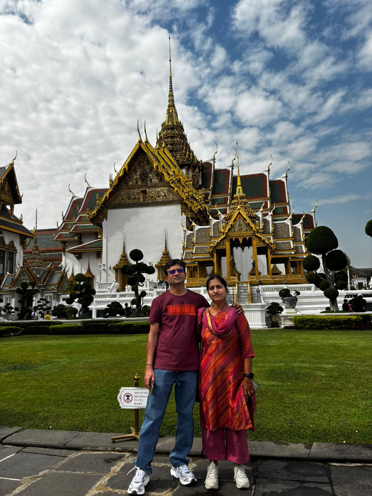

The grand Palace, Bangkok

Every visitor to Bangkok should see the magnificent buildings within the Grand Palace compound to get a feeling of the grandeur architectural style. Since the founding of Bangkok as the Nations capital by King Rama I, The grand palace has been the major architectural symbol of The Thai Royal family. In the present time, The Royal Family resides at Chitralada Palace while The Grand Palace is used for ceremonial purposes.
Located at the heart of Bangkok, Thailand, the Grand Palace was a former residence for King Rama I to King Rama V of the Rattanakosin Kingdom. Today, the place is used for hosting royal ceremonies and welcoming the king's guests, State guests, and other foreign dignitaries. It is also a place where remains of kings and high-ranked members of the royal family were situated before cremation. The grand palace is divided into two main zones, which are the Temple of the Emerald Buddha and the royal residence. The latter is divided into three major areas: the Outer Court, the Middle Court, and the Inner Court.